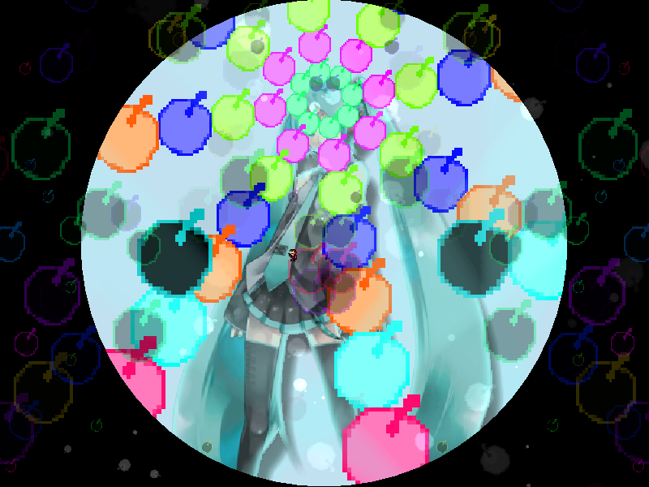
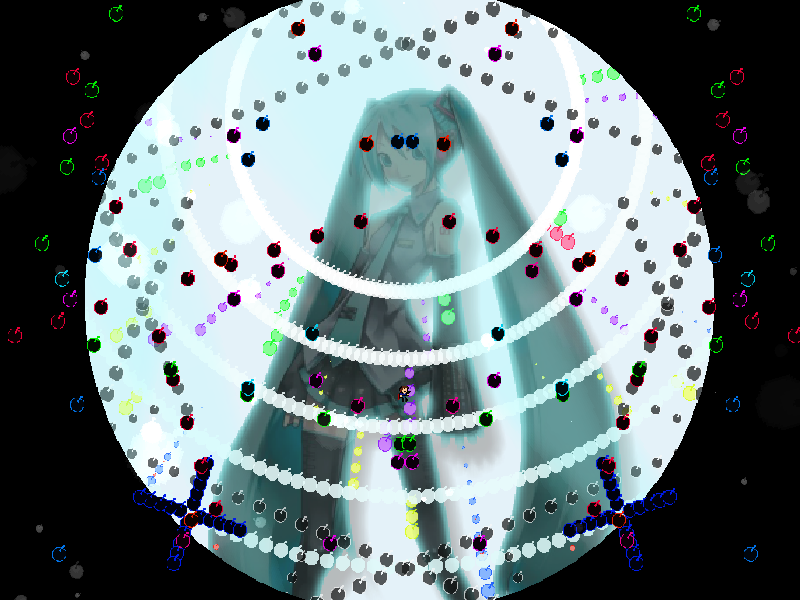
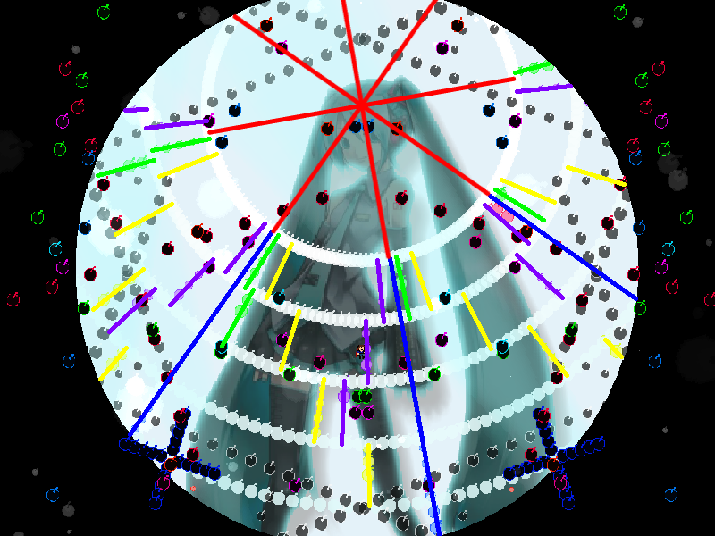
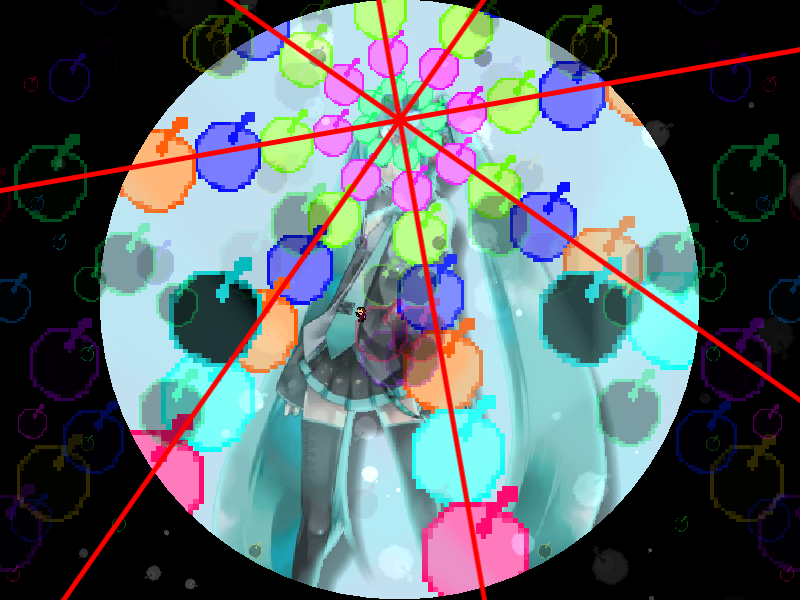

chapter11 - section2

| creator | segment | label | jump |
|---|---|---|---|
| NN | 2:29.90~2:30.20 | P*A | infinite |
11-1の解答に対応する、角度のみがランダムな弾幕です。
11-1における背景演出によって、2:29.90において画面上部を中心として生成される8方向に広がる放射状弾幕の角度を予測することができます（fig.11-2.1.a, fig.11-2.1.b）。


11-1において画面上部を中心として画面外から生成される残像付きの円形弾幕に関して、これらは同心円状弾幕によって分割される空間を1層通過するたびに、中心に対する角度が色ごとにランダムな一定の値だけ変化し、最も内側の層に突入した時点ですべての色について特定の角度（正解の角度）に収束します（fig.11-2.2.a）。
2:29.90において画面上部を中心として生成される8方向に広がる放射状弾幕については、その正解の角度を基準として生成されます（fig.11-2.2.b）。
なお、残像付きの円形弾幕については同心円状弾幕によって分割される空間のうち最も内側の層に突入した時点で視認不可能となるため、正解の角度を直接観測することはできません。
特定の色の残像付きの円形弾幕に関してその軌道を追跡し、層を通過した際の角度の変化量を見極めた上で正解の角度を予測することを目的としています。

